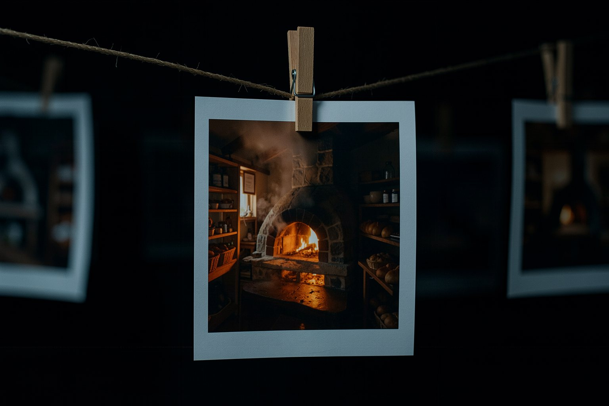

CARCKHÉ with AI program · course 1 of 6 · 8 lessons
Generation: from storyboard to clip with the Oct/2026 generators
Which generator to use for each shot, how to write the prompt with sound, why the key image comes before the video, and how to keep the same character across shots. Each lesson ends in a file or a clip that the page itself checks. You generate with whatever tool you have, paid or open.

- 8lessons
- 8deliverables checked on the page
- 0credits spent by the course
- 7generators in the 10/19/2026 table (+ the Sora case)
The lessons
The scene from course 0 continues: "A primeira fornada". Here, Dona Lia's storyboard becomes stills, clips, and a list of prompts; you do the same with yours.
 Lesson 1 · 18 minThe map of generators in Oct 2026 and how to chooseVideo generators change versions every few months and sometimes disappear, like Sora. That's why the choice doesn't start with the ranking: it starts with what your shot asks for. Duration, dialogue, reference, and license decide; the dated table just shows who meets the need today.
Lesson 1 · 18 minThe map of generators in Oct 2026 and how to chooseVideo generators change versions every few months and sometimes disappear, like Sora. That's why the choice doesn't start with the ranking: it starts with what your shot asks for. Duration, dialogue, reference, and license decide; the dated table just shows who meets the need today. Lesson 2 · 17 minAnatomy of a video prompt: subject, action, camera, light and soundA video prompt is the shot-list line written for the machine. Who it is, what they do, where, how the camera sees it, what light, and what you hear. Now that sound comes out together with the image, it goes in the prompt too, in a separate sentence.
Lesson 2 · 17 minAnatomy of a video prompt: subject, action, camera, light and soundA video prompt is the shot-list line written for the machine. Who it is, what they do, where, how the camera sees it, what light, and what you hear. Now that sound comes out together with the image, it goes in the prompt too, in a separate sentence.
Lesson 3 · 18 minKey image first: cARCKHÉtic still and lookbookBefore you animate, get the picture right. An image takes seconds, so you can test the look many times and take only the approved frame into video. The lookbook keeps the recipe for that look in a base prompt that goes into every still of the scene unchanged. Lesson 4 · 19 minFrom image to motion: image-to-video and first/last frameWith the approved still, the generator already knows who, where and what light. The prompt now only says what changes: the camera movement, the action and the sound. With first and last frame, you also decide where the shot ends. And before moving on, the page checks the clip.
Lesson 4 · 19 minFrom image to motion: image-to-video and first/last frameWith the approved still, the generator already knows who, where and what light. The prompt now only says what changes: the camera movement, the action and the sound. With first and last frame, you also decide where the shot ends. And before moving on, the page checks the clip. Lesson 5 · 18 minConsistency by reference: character, object and style across shotsOne of the most visible mistakes in AI video is the character whose face changes from one shot to the next. The 2026 generators accept reference images, each with its own name and limit. The method is the same in all of them: reference image, locked description, fixed look and inherited last frame.
Lesson 5 · 18 minConsistency by reference: character, object and style across shotsOne of the most visible mistakes in AI video is the character whose face changes from one shot to the next. The 2026 generators accept reference images, each with its own name and limit. The method is the same in all of them: reference image, locked description, fixed look and inherited last frame. Lesson 6 · 17 minSeveral shots and lines in one generation: multishot and dialogueIn 2026, some generators make several shots with cuts in a single generation, keeping the character and light, and they already put the dialogue in the speaker's mouth. This saves you from stitching clips together, but it asks for a more precise script: numbered shots, who says what, and how long each one lasts.
Lesson 6 · 17 minSeveral shots and lines in one generation: multishot and dialogueIn 2026, some generators make several shots with cuts in a single generation, keeping the character and light, and they already put the dialogue in the speaker's mouth. This saves you from stitching clips together, but it asks for a more precise script: numbered shots, who says what, and how long each one lasts. Lesson 7 · 18 minThe open path: ComfyUI with LTX and Wan 2.2, VRAM and licenseAn open model runs on your machine, with no credit per generation and no need for a platform to stay online. In return, it asks for a graphics card with memory, free disk space and a read of the license. This lesson helps you decide whether your machine can run it and which model and template to use in ComfyUI.
Lesson 7 · 18 minThe open path: ComfyUI with LTX and Wan 2.2, VRAM and licenseAn open model runs on your machine, with no credit per generation and no need for a platform to stay online. In return, it asks for a graphics card with memory, free disk space and a read of the license. This lesson helps you decide whether your machine can run it and which model and template to use in ComfyUI. Lesson 8 · 20 minYour prompt generator: from storyboard to prompt list with an agentWriting eight prompts by hand, with the same look and the same lock, is tiring and leaves room for mistakes. An AI assistant with clear rules drafts the whole list from the storyboard in course 0. You review it, the page checks it, and the list goes to any generator.
Lesson 8 · 20 minYour prompt generator: from storyboard to prompt list with an agentWriting eight prompts by hand, with the same look and the same lock, is tiring and leaves room for mistakes. An AI assistant with clear rules drafts the whole list from the storyboard in course 0. You review it, the page checks it, and the list goes to any generator.
Who it's for
- 1People who took course 0 (Directing) or already generate images with AI.
- 2Creators, teachers, and people who make video for companies.
- 3People who don't use a terminal: everything is done in the browser; lesson 7 uses ComfyUI, which has a window.
What you walk away able to do
- 1Pick the generator based on what the shot needs, with the date of your choice.
- 2Write a video prompt with camera, light, sound, and dialogue.
- 3Generate the key image first and animate from it.
- 4Take your scene's list of prompts to any generator.
The program (6 courses)
- 10 · Directing
- 21 · Generation (this course)
- 32 · Production: from script to finished film
- 43 · Motion by code with an agent
- 54 · The video factory with agents
- 65 · CARCKHÉtic websites